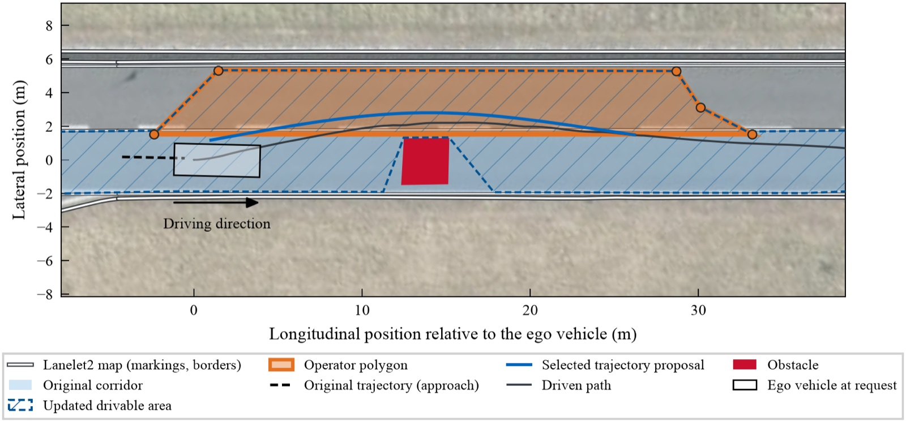
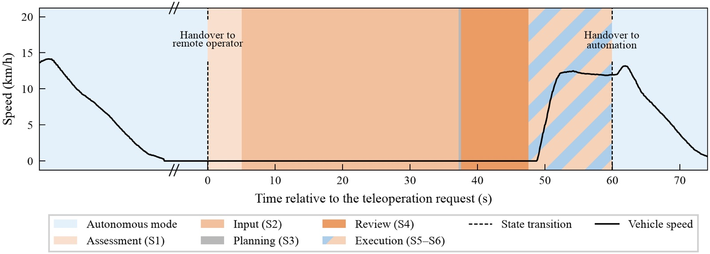
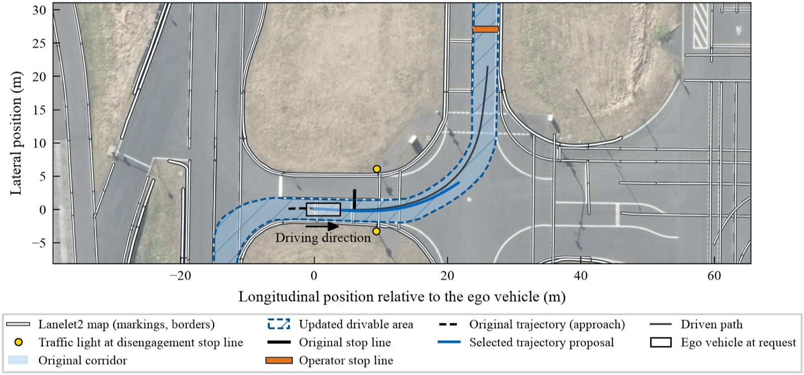
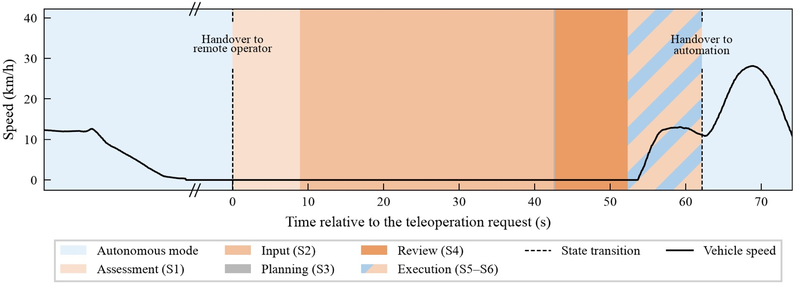

Autonomous vehicles rely on remote assistance via teleoperation to solve edge cases.
In the system presented here, a remote operator adjusts the drivable space used by an optimisation-based motion planner, enabling it to find a trajectory around an obstruction or release stoplines.
Blocking Object in Lane
A Deep Dive into the Data


Covered Traffic Light
A Deep Dive into the Data


Deep Dive into the Project
Remote operation is used in robotics and autonomous driving to resolve, through human intervention, edge cases that the automation cannot solve on its own. In this project, rather than controlling the vehicle directly via steering wheel and pedals, the remote operator interacts with the motion planning module to resolve edge cases that originate in planning.
The teleoperation system is built up as follows: when the vehicle cannot continue, it stops and requests remote assistance. The operator adapts the drivable space, either by drawing a corridor around an obstacle or by moving a virtual stop line. The vehicle’s motion planner then computes a trajectory within the adapted space. Once the operator confirms it, the vehicle drives the manoeuvre and hands control back to the automation.
Both use cases were presented to the public at the autotech.agil final event. In 32 runs, both use cases were demonstrated to visitors. This page shows one exemplary run for each use case.
Further Reading
Human-Aided Trajectory Planning for Automated Vehicles through Teleoperation and Arbitration Graphs
IEEE Intelligent Vehicles Symposium 2025
Funded by the BMFTR within the project autotech.agil. Drivable Space Adaptation is a joint project between the TUM Chair of Automotive Technology and the KIT Institute of Measurement and Control Systems.